This is part 7 in my series on writing modern idiomatic pandas.
Timeseries
Pandas started out in the financial world, so naturally it has strong timeseries support.
The first half of this post will look at pandas' capabilities for manipulating time series data. The second half will discuss modelling time series data with statsmodels.
%matplotlib inline
import os
import numpy as np
import pandas as pd
import pandas_datareader.data as web
import seaborn as sns
import matplotlib.pyplot as plt
sns.set(style='ticks', context='talk')
if int(os.environ.get("MODERN_PANDAS_EPUB", 0)):
import prep # noqa
Let's grab some stock data for Goldman Sachs using the pandas-datareader package, which spun off of pandas:
gs = web.DataReader("GS", data_source='yahoo', start='2006-01-01',
end='2010-01-01')
gs.head().round(2)
| Open | High | Low | Close | Adj Close | Volume | |
|---|---|---|---|---|---|---|
| Date | ||||||
| 2006-01-03 | 126.70 | 129.44 | 124.23 | 128.87 | 112.34 | 6188700 |
| 2006-01-04 | 127.35 | 128.91 | 126.38 | 127.09 | 110.79 | 4861600 |
| 2006-01-05 | 126.00 | 127.32 | 125.61 | 127.04 | 110.74 | 3717400 |
| 2006-01-06 | 127.29 | 129.25 | 127.29 | 128.84 | 112.31 | 4319600 |
| 2006-01-09 | 128.50 | 130.62 | 128.00 | 130.39 | 113.66 | 4723500 |
There isn't a special data-container just for time series in pandas, they're just Series or DataFrames with a DatetimeIndex.
Special Slicing
Looking at the elements of gs.index, we see that DatetimeIndexes are made up of pandas.Timestamps:
Looking at the elements of gs.index, we see that DatetimeIndexes are made up of pandas.Timestamps:
gs.index[0]
Timestamp('2006-01-03 00:00:00')
A Timestamp is mostly compatible with the datetime.datetime class, but much amenable to storage in arrays.
Working with Timestamps can be awkward, so Series and DataFrames with DatetimeIndexes have some special slicing rules.
The first special case is partial-string indexing. Say we wanted to select all the days in 2006. Even with Timestamp's convenient constructors, it's a pai
gs.loc[pd.Timestamp('2006-01-01'):pd.Timestamp('2006-12-31')].head()
| Open | High | Low | Close | Adj Close | Volume | |
|---|---|---|---|---|---|---|
| Date | ||||||
| 2006-01-03 | 126.699997 | 129.440002 | 124.230003 | 128.869995 | 112.337547 | 6188700 |
| 2006-01-04 | 127.349998 | 128.910004 | 126.379997 | 127.089996 | 110.785889 | 4861600 |
| 2006-01-05 | 126.000000 | 127.320000 | 125.610001 | 127.040001 | 110.742340 | 3717400 |
| 2006-01-06 | 127.290001 | 129.250000 | 127.290001 | 128.839996 | 112.311401 | 4319600 |
| 2006-01-09 | 128.500000 | 130.619995 | 128.000000 | 130.389999 | 113.662605 | 4723500 |
Thanks to partial-string indexing, it's as simple as
gs.loc['2006'].head()
| Open | High | Low | Close | Adj Close | Volume | |
|---|---|---|---|---|---|---|
| Date | ||||||
| 2006-01-03 | 126.699997 | 129.440002 | 124.230003 | 128.869995 | 112.337547 | 6188700 |
| 2006-01-04 | 127.349998 | 128.910004 | 126.379997 | 127.089996 | 110.785889 | 4861600 |
| 2006-01-05 | 126.000000 | 127.320000 | 125.610001 | 127.040001 | 110.742340 | 3717400 |
| 2006-01-06 | 127.290001 | 129.250000 | 127.290001 | 128.839996 | 112.311401 | 4319600 |
| 2006-01-09 | 128.500000 | 130.619995 | 128.000000 | 130.389999 | 113.662605 | 4723500 |
Since label slicing is inclusive, this slice selects any observation where the year is 2006.
The second "convenience" is __getitem__ (square-bracket) fall-back indexing. I'm only going to mention it here, with the caveat that you should never use it.
DataFrame __getitem__ typically looks in the column: gs['2006'] would search gs.columns for '2006', not find it, and raise a KeyError. But DataFrames with a DatetimeIndex catch that KeyError and try to slice the index.
If it succeeds in slicing the index, the result like gs.loc['2006'] is returned.
If it fails, the KeyError is re-raised.
This is confusing because in pretty much every other case DataFrame.__getitem__ works on columns, and it's fragile because if you happened to have a column '2006' you would get just that column, and no fall-back indexing would occur. Just use gs.loc['2006'] when slicing DataFrame indexes.
Special Methods
Resampling
Resampling is similar to a groupby: you split the time series into groups (5-day buckets below), apply a function to each group (mean), and combine the result (one row per group).
gs.resample("5d").mean().head()
| Open | High | Low | Close | Adj Close | Volume | |
|---|---|---|---|---|---|---|
| Date | ||||||
| 2006-01-03 | 126.834999 | 128.730002 | 125.877501 | 127.959997 | 111.544294 | 4.771825e+06 |
| 2006-01-08 | 130.349998 | 132.645000 | 130.205002 | 131.660000 | 114.769649 | 4.664300e+06 |
| 2006-01-13 | 131.510002 | 133.395005 | 131.244995 | 132.924995 | 115.872357 | 3.258250e+06 |
| 2006-01-18 | 132.210002 | 133.853333 | 131.656667 | 132.543335 | 115.611125 | 4.997767e+06 |
| 2006-01-23 | 133.771997 | 136.083997 | 133.310001 | 135.153998 | 118.035918 | 3.968500e+06 |
gs.resample("W").agg(['mean', 'sum']).head()
| Open | High | Low | Close | Adj Close | Volume | |||||||
|---|---|---|---|---|---|---|---|---|---|---|---|---|
| mean | sum | mean | sum | mean | sum | mean | sum | mean | sum | mean | sum | |
| Date | ||||||||||||
| 2006-01-08 | 126.834999 | 507.339996 | 128.730002 | 514.920006 | 125.877501 | 503.510002 | 127.959997 | 511.839988 | 111.544294 | 446.177177 | 4771825.0 | 19087300 |
| 2006-01-15 | 130.684000 | 653.419998 | 132.848001 | 664.240006 | 130.544000 | 652.720001 | 131.979999 | 659.899994 | 115.048592 | 575.242958 | 4310420.0 | 21552100 |
| 2006-01-22 | 131.907501 | 527.630005 | 133.672501 | 534.690003 | 131.389999 | 525.559998 | 132.555000 | 530.220000 | 115.603432 | 462.413728 | 4653725.0 | 18614900 |
| 2006-01-29 | 133.771997 | 668.859986 | 136.083997 | 680.419983 | 133.310001 | 666.550003 | 135.153998 | 675.769989 | 118.035918 | 590.179588 | 3968500.0 | 19842500 |
| 2006-02-05 | 140.900000 | 704.500000 | 142.467999 | 712.339996 | 139.937998 | 699.689988 | 141.618002 | 708.090011 | 123.681204 | 618.406020 | 3920120.0 | 19600600 |
You can up-sample to convert to a higher frequency. The new points are filled with NaNs.
gs.resample("6H").mean().head()
| Open | High | Low | Close | Adj Close | Volume | |
|---|---|---|---|---|---|---|
| Date | ||||||
| 2006-01-03 00:00:00 | 126.699997 | 129.440002 | 124.230003 | 128.869995 | 112.337547 | 6188700.0 |
| 2006-01-03 06:00:00 | NaN | NaN | NaN | NaN | NaN | NaN |
| 2006-01-03 12:00:00 | NaN | NaN | NaN | NaN | NaN | NaN |
| 2006-01-03 18:00:00 | NaN | NaN | NaN | NaN | NaN | NaN |
| 2006-01-04 00:00:00 | 127.349998 | 128.910004 | 126.379997 | 127.089996 | 110.785889 | 4861600.0 |
Rolling / Expanding / EW
These methods aren't unique to DatetimeIndexes, but they often make sense with time series, so I'll show them here.
gs.Close.plot(label='Raw')
gs.Close.rolling(28).mean().plot(label='28D MA')
gs.Close.expanding().mean().plot(label='Expanding Average')
gs.Close.ewm(alpha=0.03).mean().plot(label='EWMA($\\alpha=.03$)')
plt.legend(bbox_to_anchor=(1.25, .5))
plt.tight_layout()
plt.ylabel("Close ($)")
sns.despine()
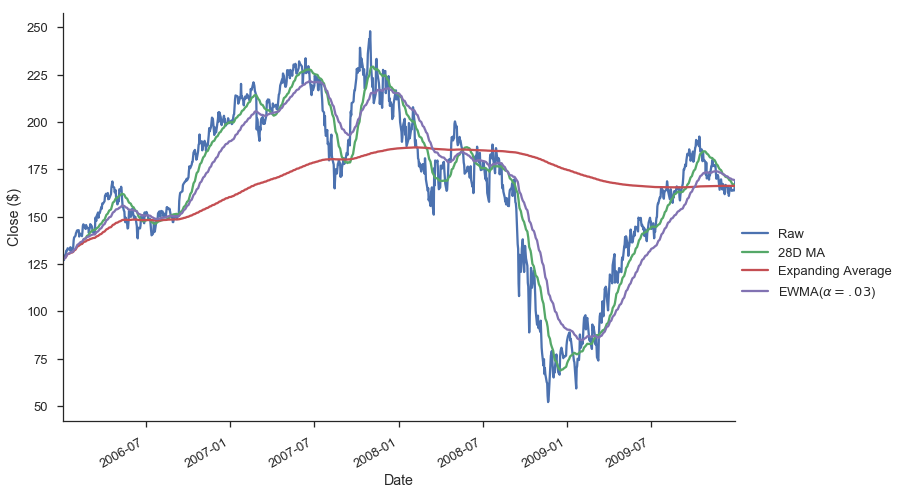
Each of .rolling, .expanding, and .ewm return a deferred object, similar to a GroupBy.
roll = gs.Close.rolling(30, center=True)
roll
Rolling [window=30,center=True,axis=0]
m = roll.agg(['mean', 'std'])
ax = m['mean'].plot()
ax.fill_between(m.index, m['mean'] - m['std'], m['mean'] + m['std'],
alpha=.25)
plt.tight_layout()
plt.ylabel("Close ($)")
sns.despine()
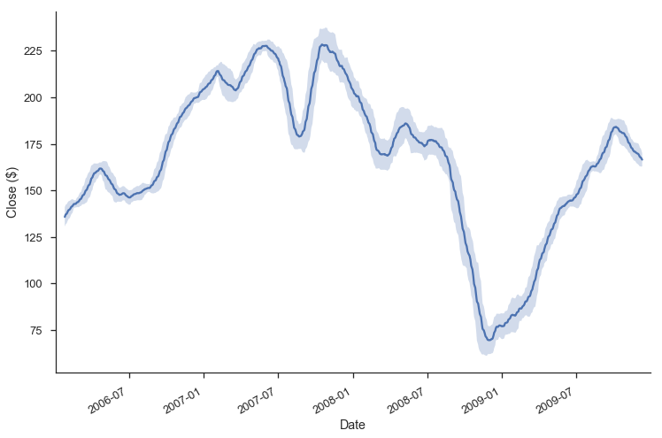
Grab Bag
Offsets
These are similar to dateutil.relativedelta, but works with arrays.
gs.index + pd.DateOffset(months=3, days=-2)
DatetimeIndex(['2006-04-01', '2006-04-02', '2006-04-03', '2006-04-04',
'2006-04-07', '2006-04-08', '2006-04-09', '2006-04-10',
'2006-04-11', '2006-04-15',
...
'2010-03-15', '2010-03-16', '2010-03-19', '2010-03-20',
'2010-03-21', '2010-03-22', '2010-03-26', '2010-03-27',
'2010-03-28', '2010-03-29'],
dtype='datetime64[ns]', name='Date', length=1007, freq=None)
Holiday Calendars
There are a whole bunch of special calendars, useful for traders probabaly.
from pandas.tseries.holiday import USColumbusDay
USColumbusDay.dates('2015-01-01', '2020-01-01')
DatetimeIndex(['2015-10-12', '2016-10-10', '2017-10-09', '2018-10-08',
'2019-10-14'],
dtype='datetime64[ns]', freq='WOM-2MON')
Timezones
Pandas works with pytz for nice timezone-aware datetimes.
The typical workflow is
- localize timezone-naive timestamps to some timezone
- convert to desired timezone
If you already have timezone-aware Timestamps, there's no need for step one.
# tz naiive -> tz aware..... to desired UTC
gs.tz_localize('US/Eastern').tz_convert('UTC').head()
| Open | High | Low | Close | Adj Close | Volume | |
|---|---|---|---|---|---|---|
| Date | ||||||
| 2006-01-03 05:00:00+00:00 | 126.699997 | 129.440002 | 124.230003 | 128.869995 | 112.337547 | 6188700 |
| 2006-01-04 05:00:00+00:00 | 127.349998 | 128.910004 | 126.379997 | 127.089996 | 110.785889 | 4861600 |
| 2006-01-05 05:00:00+00:00 | 126.000000 | 127.320000 | 125.610001 | 127.040001 | 110.742340 | 3717400 |
| 2006-01-06 05:00:00+00:00 | 127.290001 | 129.250000 | 127.290001 | 128.839996 | 112.311401 | 4319600 |
| 2006-01-09 05:00:00+00:00 | 128.500000 | 130.619995 | 128.000000 | 130.389999 | 113.662605 | 4723500 |
Modeling Time Series
The rest of this post will focus on time series in the econometric sense. My indented reader for this section isn't all that clear, so I apologize upfront for any sudden shifts in complexity. I'm roughly targeting material that could be presented in a first or second semester applied statisctics course. What follows certainly isn't a replacement for that. Any formality will be restricted to footnotes for the curious. I've put a whole bunch of resources at the end for people earger to learn more.
We'll focus on modelling Average Monthly Flights. Let's download the data. If you've been following along in the series, you've seen most of this code before, so feel free to skip.
import os
import io
import glob
import zipfile
from utils import download_timeseries
import statsmodels.api as sm
def download_many(start, end):
months = pd.period_range(start, end=end, freq='M')
# We could easily parallelize this loop.
for i, month in enumerate(months):
download_timeseries(month)
def time_to_datetime(df, columns):
'''
Combine all time items into datetimes.
2014-01-01,1149.0 -> 2014-01-01T11:49:00
'''
def converter(col):
timepart = (col.astype(str)
.str.replace('\.0$', '') # NaNs force float dtype
.str.pad(4, fillchar='0'))
return pd.to_datetime(df['fl_date'] + ' ' +
timepart.str.slice(0, 2) + ':' +
timepart.str.slice(2, 4),
errors='coerce')
return datetime_part
df[columns] = df[columns].apply(converter)
return df
def read_one(fp):
df = (pd.read_csv(fp, encoding='latin1')
.rename(columns=str.lower)
.drop('unnamed: 6', axis=1)
.pipe(time_to_datetime, ['dep_time', 'arr_time', 'crs_arr_time',
'crs_dep_time'])
.assign(fl_date=lambda x: pd.to_datetime(x['fl_date'])))
return df
/Users/taugspurger/miniconda3/envs/modern-pandas/lib/python3.6/site-packages/statsmodels/compat/pandas.py:56: FutureWarning: The pandas.core.datetools module is deprecated and will be removed in a future version. Please use the pandas.tseries module instead.
from pandas.core import datetools
store = 'data/ts.hdf5'
if not os.path.exists(store):
download_many('2000-01-01', '2016-01-01')
zips = glob.glob(os.path.join('data', 'timeseries', '*.zip'))
csvs = [unzip_one(fp) for fp in zips]
dfs = [read_one(fp) for fp in csvs]
df = pd.concat(dfs, ignore_index=True)
df['origin'] = df['origin'].astype('category')
df.to_hdf(store, 'ts', format='table')
else:
df = pd.read_hdf(store, 'ts')
with pd.option_context('display.max_rows', 100):
print(df.dtypes)
fl_date datetime64[ns]
origin category
crs_dep_time datetime64[ns]
dep_time datetime64[ns]
crs_arr_time datetime64[ns]
arr_time datetime64[ns]
dtype: object
We can calculate the historical values with a resample.
daily = df.fl_date.value_counts().sort_index()
y = daily.resample('MS').mean()
y.head()
2000-01-01 15176.677419
2000-02-01 15327.551724
2000-03-01 15578.838710
2000-04-01 15442.100000
2000-05-01 15448.677419
Freq: MS, Name: fl_date, dtype: float64
Note that I use the "MS" frequency code there.
Pandas defaults to end of month (or end of year).
Append an 'S' to get the start.
ax = y.plot()
ax.set(ylabel='Average Monthly Flights')
sns.despine()
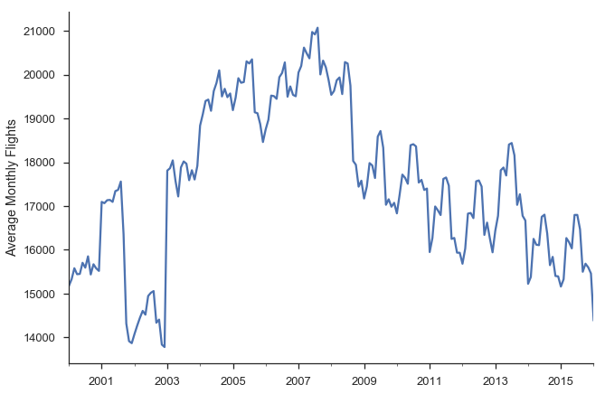
import statsmodels.formula.api as smf
import statsmodels.tsa.api as smt
import statsmodels.api as sm
One note of warning: I'm using the development version of statsmodels (commit de15ec8 to be precise).
Not all of the items I've shown here are available in the currently-released version.
Think back to a typical regression problem, ignoring anything to do with time series for now. The usual task is to predict some value $y$ using some a linear combination of features in $X$.
$$y = \beta_0 + \beta_1 X_1 + \ldots + \beta_p X_p + \epsilon$$
When working with time series, some of the most important (and sometimes only) features are the previous, or lagged, values of $y$.
Let's start by trying just that "manually": running a regression of y on lagged values of itself.
We'll see that this regression suffers from a few problems: multicollinearity, autocorrelation, non-stationarity, and seasonality.
I'll explain what each of those are in turn and why they're problems.
Afterwards, we'll use a second model, seasonal ARIMA, which handles those problems for us.
First, let's create a dataframe with our lagged values of y using the .shift method, which shifts the index i periods, so it lines up with that observation.
X = (pd.concat([y.shift(i) for i in range(6)], axis=1,
keys=['y'] + ['L%s' % i for i in range(1, 6)])
.dropna())
X.head()
| y | L1 | L2 | L3 | L4 | L5 | |
|---|---|---|---|---|---|---|
| 2000-06-01 | 15703.333333 | 15448.677419 | 15442.100000 | 15578.838710 | 15327.551724 | 15176.677419 |
| 2000-07-01 | 15591.677419 | 15703.333333 | 15448.677419 | 15442.100000 | 15578.838710 | 15327.551724 |
| 2000-08-01 | 15850.516129 | 15591.677419 | 15703.333333 | 15448.677419 | 15442.100000 | 15578.838710 |
| 2000-09-01 | 15436.566667 | 15850.516129 | 15591.677419 | 15703.333333 | 15448.677419 | 15442.100000 |
| 2000-10-01 | 15669.709677 | 15436.566667 | 15850.516129 | 15591.677419 | 15703.333333 | 15448.677419 |
We can fit the lagged model using statsmodels (which uses patsy to translate the formula string to a design matrix).
mod_lagged = smf.ols('y ~ trend + L1 + L2 + L3 + L4 + L5',
data=X.assign(trend=np.arange(len(X))))
res_lagged = mod_lagged.fit()
res_lagged.summary()
| Dep. Variable: | y | R-squared: | 0.896 |
|---|---|---|---|
| Model: | OLS | Adj. R-squared: | 0.893 |
| Method: | Least Squares | F-statistic: | 261.1 |
| Date: | Sun, 03 Sep 2017 | Prob (F-statistic): | 2.61e-86 |
| Time: | 11:21:46 | Log-Likelihood: | -1461.2 |
| No. Observations: | 188 | AIC: | 2936. |
| Df Residuals: | 181 | BIC: | 2959. |
| Df Model: | 6 | ||
| Covariance Type: | nonrobust |
| coef | std err | t | P>|t| | [0.025 | 0.975] | |
|---|---|---|---|---|---|---|
| Intercept | 1055.4443 | 459.096 | 2.299 | 0.023 | 149.575 | 1961.314 |
| trend | -1.0395 | 0.795 | -1.307 | 0.193 | -2.609 | 0.530 |
| L1 | 1.0143 | 0.075 | 13.543 | 0.000 | 0.867 | 1.162 |
| L2 | -0.0769 | 0.106 | -0.725 | 0.470 | -0.286 | 0.133 |
| L3 | -0.0666 | 0.106 | -0.627 | 0.531 | -0.276 | 0.143 |
| L4 | 0.1311 | 0.106 | 1.235 | 0.219 | -0.078 | 0.341 |
| L5 | -0.0567 | 0.075 | -0.758 | 0.449 | -0.204 | 0.091 |
| Omnibus: | 74.709 | Durbin-Watson: | 1.979 |
|---|---|---|---|
| Prob(Omnibus): | 0.000 | Jarque-Bera (JB): | 851.300 |
| Skew: | 1.114 | Prob(JB): | 1.39e-185 |
| Kurtosis: | 13.184 | Cond. No. | 4.24e+05 |
There are a few problems with this approach though. Since our lagged values are highly correlated with each other, our regression suffers from multicollinearity. That ruins our estimates of the slopes.
sns.heatmap(X.corr());
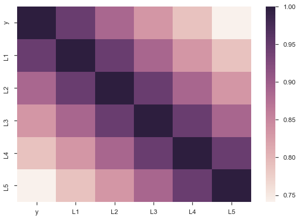
Second, we'd intuitively expect the $\beta_i$s to gradually decline to zero. The immediately preceding period should be most important ($\beta_1$ is the largest coefficient in absolute value), followed by $\beta_2$, and $\beta_3$... Looking at the regression summary and the bar graph below, this isn't the case (the cause is related to multicollinearity).
ax = res_lagged.params.drop(['Intercept', 'trend']).plot.bar(rot=0)
plt.ylabel('Coefficeint')
sns.despine()
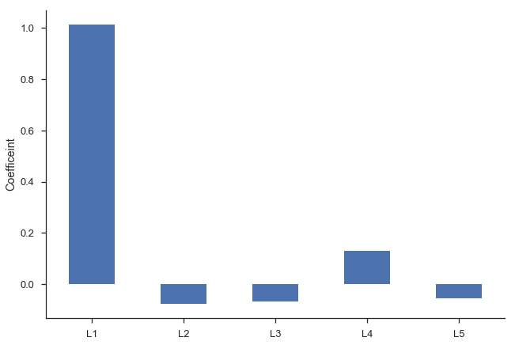
Finally, our degrees of freedom drop since we lose two for each variable (one for estimating the coefficient, one for the lost observation as a result of the shift).
At least in (macro)econometrics, each observation is precious and we're loath to throw them away, though sometimes that's unavoidable.
Autocorrelation
Another problem our lagged model suffered from is autocorrelation (also know as serial correlation).
Roughly speaking, autocorrelation is when there's a clear pattern in the residuals of your regression (the observed minus the predicted).
Let's fit a simple model of $y = \beta_0 + \beta_1 T + \epsilon$, where T is the time trend (np.arange(len(y))).
# `Results.resid` is a Series of residuals: y - ŷ
mod_trend = sm.OLS.from_formula(
'y ~ trend', data=y.to_frame(name='y')
.assign(trend=np.arange(len(y))))
res_trend = mod_trend.fit()
Residuals (the observed minus the expected, or $\hat{e_t} = y_t - \hat{y_t}$) are supposed to be white noise. That's one of the assumptions many of the properties of linear regression are founded upon. In this case there's a correlation between one residual and the next: if the residual at time $t$ was above expectation, then the residual at time $t + 1$ is much more likely to be above average as well ($e_t > 0 \implies E_t[e_{t+1}] > 0$).
We'll define a helper function to plot the residuals time series, and some diagnostics about them.
def tsplot(y, lags=None, figsize=(10, 8)):
fig = plt.figure(figsize=figsize)
layout = (2, 2)
ts_ax = plt.subplot2grid(layout, (0, 0), colspan=2)
acf_ax = plt.subplot2grid(layout, (1, 0))
pacf_ax = plt.subplot2grid(layout, (1, 1))
y.plot(ax=ts_ax)
smt.graphics.plot_acf(y, lags=lags, ax=acf_ax)
smt.graphics.plot_pacf(y, lags=lags, ax=pacf_ax)
[ax.set_xlim(1.5) for ax in [acf_ax, pacf_ax]]
sns.despine()
plt.tight_layout()
return ts_ax, acf_ax, pacf_ax
Calling it on the residuals from the linear trend:
tsplot(res_trend.resid, lags=36);
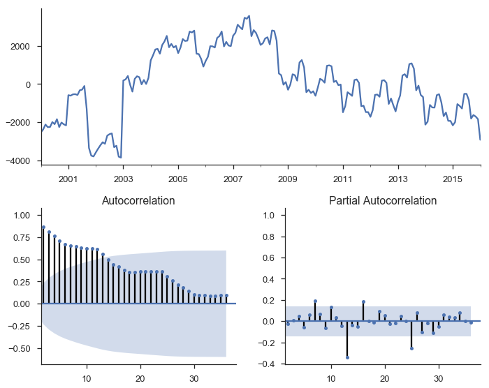
The top subplot shows the time series of our residuals $e_t$, which should be white noise (but it isn't). The bottom shows the autocorrelation of the residuals as a correlogram. It measures the correlation between a value and it's lagged self, e.g. $corr(e_t, e_{t-1}), corr(e_t, e_{t-2}), \ldots$. The partial autocorrelation plot in the bottom-right shows a similar concept. It's partial in the sense that the value for $corr(e_t, e_{t-k})$ is the correlation between those two periods, after controlling for the values at all shorter lags.
Autocorrelation is a problem in regular regressions like above, but we'll use it to our advantage when we setup an ARIMA model below. The basic idea is pretty sensible: if your regression residuals have a clear pattern, then there's clearly some structure in the data that you aren't taking advantage of. If a positive residual today means you'll likely have a positive residual tomorrow, why not incorporate that information into your forecast, and lower your forecasted value for tomorrow? That's pretty much what ARIMA does.
It's important that your dataset be stationary, otherwise you run the risk of finding spurious correlations. A common example is the relationship between number of TVs per person and life expectancy. It's not likely that there's an actual causal relationship there. Rather, there could be a third variable that's driving both (wealth, say). Granger and Newbold (1974) had some stern words for the econometrics literature on this.
We find it very curious that whereas virtually every textbook on econometric methodology contains explicit warnings of the dangers of autocorrelated errors, this phenomenon crops up so frequently in well-respected applied work.
(:fire:), but in that academic passive-aggressive way.
The typical way to handle non-stationarity is to difference the non-stationary variable until is is stationary.
y.to_frame(name='y').assign(Δy=lambda x: x.y.diff()).plot(subplots=True)
sns.despine()
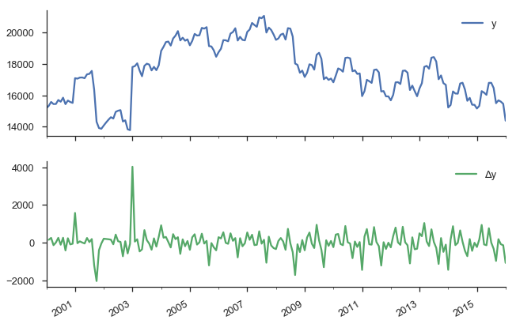
Our original series actually doesn't look that bad. It doesn't look like nominal GDP say, where there's a clearly rising trend. But we have more rigorous methods for detecting whether a series is non-stationary than simply plotting and squinting at it. One popular method is the Augmented Dickey-Fuller test. It's a statistical hypothesis test that roughly says:
$H_0$ (null hypothesis): $y$ is non-stationary, needs to be differenced
$H_A$ (alternative hypothesis): $y$ is stationary, doesn't need to be differenced
I don't want to get into the weeds on exactly what the test statistic is, and what the distribution looks like.
This is implemented in statsmodels as smt.adfuller.
The return type is a bit busy for me, so we'll wrap it in a namedtuple.
from collections import namedtuple
ADF = namedtuple("ADF", "adf pvalue usedlag nobs critical icbest")
ADF(*smt.adfuller(y))._asdict()
OrderedDict([('adf', -1.3206520699512339),
('pvalue', 0.61967180643147923),
('usedlag', 15),
('nobs', 177),
('critical',
{'1%': -3.4678453197999071,
'10%': -2.575551186759871,
'5%': -2.8780117454974392}),
('icbest', 2710.6120408261486)])
So we failed to reject the null hypothesis that the original series was non-stationary. Let's difference it.
ADF(*smt.adfuller(y.diff().dropna()))._asdict()
OrderedDict([('adf', -3.6412428797327996),
('pvalue', 0.0050197770854934548),
('usedlag', 14),
('nobs', 177),
('critical',
{'1%': -3.4678453197999071,
'10%': -2.575551186759871,
'5%': -2.8780117454974392}),
('icbest', 2696.3891181091631)])
This looks better. It's not statistically significant at the 5% level, but who cares what statisticins say anyway.
We'll fit another OLS model of $\Delta y = \beta_0 + \beta_1 L \Delta y_{t-1} + e_t$
data = (y.to_frame(name='y')
.assign(Δy=lambda df: df.y.diff())
.assign(LΔy=lambda df: df.Δy.shift()))
mod_stationary = smf.ols('Δy ~ LΔy', data=data.dropna())
res_stationary = mod_stationary.fit()
tsplot(res_stationary.resid, lags=24);
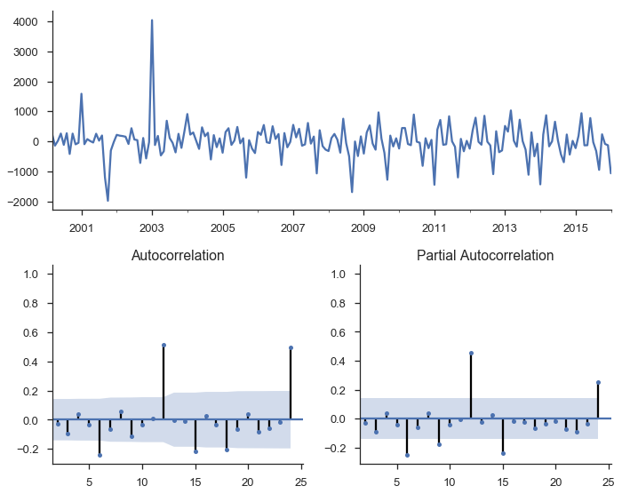
So we've taken care of multicolinearity, autocorelation, and stationarity, but we still aren't done.
Seasonality
We have strong monthly seasonality:
smt.seasonal_decompose(y).plot();
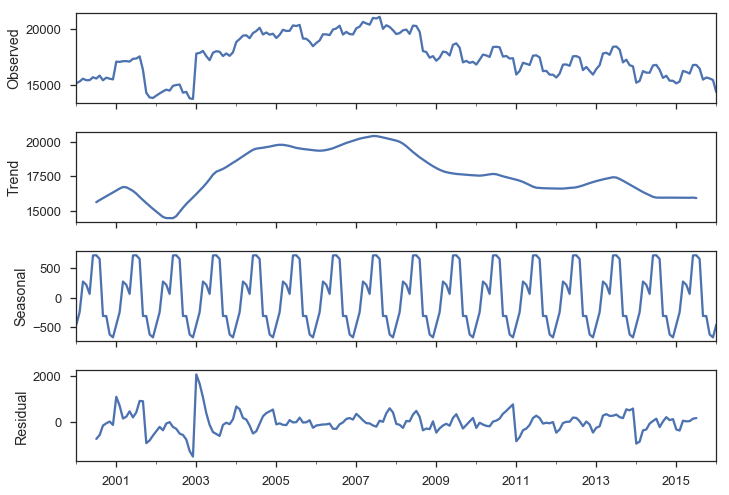
There are a few ways to handle seasonality.
We'll just rely on the SARIMAX method to do it for us.
For now, recognize that it's a problem to be solved.
ARIMA
So, we've sketched the problems with regular old regression: multicollinearity, autocorrelation, non-stationarity, and seasonality.
Our tool of choice, smt.SARIMAX, which stands for Seasonal ARIMA with eXogenous regressors, can handle all these.
We'll walk through the components in pieces.
ARIMA stands for AutoRegressive Integrated Moving Average. It's a relatively simple yet flexible way of modeling univariate time series. It's made up of three components, and is typically written as $\mathrm{ARIMA}(p, d, q)$.
ARIMA stands for AutoRegressive Integrated Moving Average, and it's a relatively simple way of modeling univariate time series. It's made up of three components, and is typically written as $\mathrm{ARIMA}(p, d, q)$.
AutoRegressive
The idea is to predict a variable by a linear combination of its lagged values (auto-regressive as in regressing a value on its past self). An AR(p), where $p$ represents the number of lagged values used, is written as
$$y_t = c + \phi_1 y_{t-1} + \phi_2 y_{t-2} + \ldots + \phi_p y_{t-p} + e_t$$
$c$ is a constant and $e_t$ is white noise. This looks a lot like a linear regression model with multiple predictors, but the predictors happen to be lagged values of $y$ (though they are estimated differently).
Integrated
Integrated is like the opposite of differencing, and is the part that deals with stationarity. If you have to difference your dataset 1 time to get it stationary, then $d=1$. We'll introduce one bit of notation for differencing: $\Delta y_t = y_t - y_{t-1}$ for $d=1$.
Moving Average
MA models look somewhat similar to the AR component, but it's dealing with different values.
$$y_t = c + e_t + \theta_1 e_{t-1} + \theta_2 e_{t-2} + \ldots + \theta_q e_{t-q}$$
$c$ again is a constant and $e_t$ again is white noise. But now the coefficients are the residuals from previous predictions.
Combining
Putting that together, an ARIMA(1, 1, 1) process is written as
$$\Delta y_t = c + \phi_1 \Delta y_{t-1} + \theta_t e_{t-1} + e_t$$
Using lag notation, where $L y_t = y_{t-1}$, i.e. y.shift() in pandas, we can rewrite that as
$$(1 - \phi_1 L) (1 - L)y_t = c + (1 + \theta L)e_t$$
That was for our specific $\mathrm{ARIMA}(1, 1, 1)$ model. For the general $\mathrm{ARIMA}(p, d, q)$, that becomes
$$(1 - \phi_1 L - \ldots - \phi_p L^p) (1 - L)^d y_t = c + (1 + \theta L + \ldots + \theta_q L^q)e_t$$
We went through that extremely quickly, so don't feel bad if things aren't clear. Fortunately, the model is pretty easy to use with statsmodels (using it correctly, in a statistical sense, is another matter).
mod = smt.SARIMAX(y, trend='c', order=(1, 1, 1))
res = mod.fit()
tsplot(res.resid[2:], lags=24);
res.summary()
| Dep. Variable: | fl_date | No. Observations: | 193 |
|---|---|---|---|
| Model: | SARIMAX(1, 1, 1) | Log Likelihood | -1494.618 |
| Date: | Sun, 03 Sep 2017 | AIC | 2997.236 |
| Time: | 11:21:50 | BIC | 3010.287 |
| Sample: | 01-01-2000 | HQIC | 3002.521 |
| - 01-01-2016 | |||
| Covariance Type: | opg |
| coef | std err | z | P>|z| | [0.025 | 0.975] | |
|---|---|---|---|---|---|---|
| intercept | -5.4306 | 66.818 | -0.081 | 0.935 | -136.391 | 125.529 |
| ar.L1 | -0.0327 | 2.689 | -0.012 | 0.990 | -5.303 | 5.237 |
| ma.L1 | 0.0775 | 2.667 | 0.029 | 0.977 | -5.149 | 5.305 |
| sigma2 | 3.444e+05 | 1.69e+04 | 20.392 | 0.000 | 3.11e+05 | 3.77e+05 |
| Ljung-Box (Q): | 225.58 | Jarque-Bera (JB): | 1211.00 |
|---|---|---|---|
| Prob(Q): | 0.00 | Prob(JB): | 0.00 |
| Heteroskedasticity (H): | 0.67 | Skew: | 1.20 |
| Prob(H) (two-sided): | 0.12 | Kurtosis: | 15.07 |
There's a bunch of output there with various tests, estimated parameters, and information criteria. Let's just say that things are looking better, but we still haven't accounted for seasonality.
A seasonal ARIMA model is written as $\mathrm{ARIMA}(p,d,q)×(P,D,Q)_s$. Lowercase letters are for the non-seasonal component, just like before. Upper-case letters are a similar specification for the seasonal component, where $s$ is the periodicity (4 for quarterly, 12 for monthly).
It's like we have two processes, one for non-seasonal component and one for seasonal components, and we multiply them together with regular algebra rules.
The general form of that looks like (quoting the statsmodels docs here)
$$\phi_p(L)\tilde{\phi}_P(L^S)\Delta^d\Delta_s^D y_t = A(t) + \theta_q(L)\tilde{\theta}_Q(L^s)e_t$$
where
- $\phi_p(L)$ is the non-seasonal autoregressive lag polynomial
- $\tilde{\phi}_P(L^S)$ is the seasonal autoregressive lag polynomial
- $\Delta^d\Delta_s^D$ is the time series, differenced $d$ times, and seasonally differenced $D$ times.
- $A(t)$ is the trend polynomial (including the intercept)
- $\theta_q(L)$ is the non-seasonal moving average lag polynomial
- $\tilde{\theta}_Q(L^s)$ is the seasonal moving average lag polynomial
I don't find that to be very clear, but maybe an example will help. We'll fit a seasonal ARIMA$(1,1,2)×(0, 1, 2)_{12}$.
So the nonseasonal component is
- $p=1$: period autoregressive: use $y_{t-1}$
- $d=1$: one first-differencing of the data (one month)
- $q=2$: use the previous two non-seasonal residual, $e_{t-1}$ and $e_{t-2}$, to forecast
And the seasonal component is
- $P=0$: Don't use any previous seasonal values
- $D=1$: Difference the series 12 periods back:
y.diff(12) - $Q=2$: Use the two previous seasonal residuals
mod_seasonal = smt.SARIMAX(y, trend='c',
order=(1, 1, 2), seasonal_order=(0, 1, 2, 12),
simple_differencing=False)
res_seasonal = mod_seasonal.fit()
res_seasonal.summary()
| Dep. Variable: | fl_date | No. Observations: | 193 |
|---|---|---|---|
| Model: | SARIMAX(1, 1, 2)x(0, 1, 2, 12) | Log Likelihood | -1357.847 |
| Date: | Sun, 03 Sep 2017 | AIC | 2729.694 |
| Time: | 11:21:53 | BIC | 2752.533 |
| Sample: | 01-01-2000 | HQIC | 2738.943 |
| - 01-01-2016 | |||
| Covariance Type: | opg |
| coef | std err | z | P>|z| | [0.025 | 0.975] | |
|---|---|---|---|---|---|---|
| intercept | -17.5871 | 44.920 | -0.392 | 0.695 | -105.628 | 70.454 |
| ar.L1 | -0.9988 | 0.013 | -74.479 | 0.000 | -1.025 | -0.973 |
| ma.L1 | 0.9956 | 0.109 | 9.130 | 0.000 | 0.782 | 1.209 |
| ma.L2 | 0.0042 | 0.110 | 0.038 | 0.969 | -0.211 | 0.219 |
| ma.S.L12 | -0.7836 | 0.059 | -13.286 | 0.000 | -0.899 | -0.668 |
| ma.S.L24 | 0.2118 | 0.041 | 5.154 | 0.000 | 0.131 | 0.292 |
| sigma2 | 1.842e+05 | 1.21e+04 | 15.240 | 0.000 | 1.61e+05 | 2.08e+05 |
| Ljung-Box (Q): | 32.57 | Jarque-Bera (JB): | 1298.39 |
|---|---|---|---|
| Prob(Q): | 0.79 | Prob(JB): | 0.00 |
| Heteroskedasticity (H): | 0.17 | Skew: | -1.33 |
| Prob(H) (two-sided): | 0.00 | Kurtosis: | 15.89 |
tsplot(res_seasonal.resid[12:], lags=24);
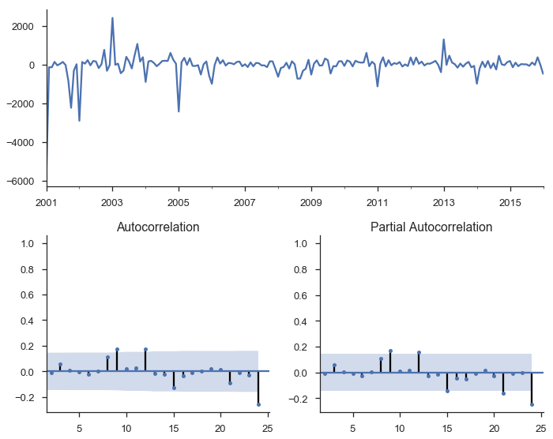
Things look much better now.
One thing I didn't really talk about is order selection. How to choose $p, d, q, P, D$ and $Q$.
R's forecast package does have a handy auto.arima function that does this for you.
Python / statsmodels don't have that at the minute.
The alternative seems to be experience (boo), intuition (boo), and good-old grid-search.
You can fit a bunch of models for a bunch of combinations of the parameters and use the AIC or BIC to choose the best.
Here is a useful reference, and this StackOverflow answer recommends a few options.
Forecasting
Now that we fit that model, let's put it to use. First, we'll make a bunch of one-step ahead forecasts. At each point (month), we take the history up to that point and make a forecast for the next month. So the forecast for January 2014 has available all the data up through December 2013.
pred = res_seasonal.get_prediction(start='2001-03-01')
pred_ci = pred.conf_int()
ax = y.plot(label='observed')
pred.predicted_mean.plot(ax=ax, label='Forecast', alpha=.7)
ax.fill_between(pred_ci.index,
pred_ci.iloc[:, 0],
pred_ci.iloc[:, 1], color='k', alpha=.2)
ax.set_ylabel("Monthly Flights")
plt.legend()
sns.despine()
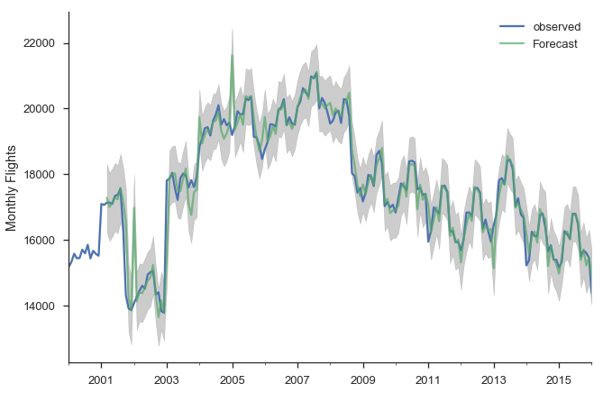
There are a few places where the observed series slips outside the 95% confidence interval. The series seems especially unstable before 2005.
Alternatively, we can make dynamic forecasts as of some month (January 2013 in the example below). That means the forecast from that point forward only use information available as of January 2013. The predictions are generated in a similar way: a bunch of one-step forecasts. Only instead of plugging in the actual values beyond January 2013, we plug in the forecast values.
pred_dy = res_seasonal.get_prediction(start='2002-03-01', dynamic='2013-01-01')
pred_dy_ci = pred_dy.conf_int()
ax = y.plot(label='observed')
pred_dy.predicted_mean.plot(ax=ax, label='Forecast')
ax.fill_between(pred_dy_ci.index,
pred_dy_ci.iloc[:, 0],
pred_dy_ci.iloc[:, 1], color='k', alpha=.25)
ax.set_ylabel("Monthly Flights")
# Highlight the forecast area
ax.fill_betweenx(ax.get_ylim(), pd.Timestamp('2013-01-01'), y.index[-1],
alpha=.1, zorder=-1)
ax.annotate('Dynamic $\\longrightarrow$', (pd.Timestamp('2013-02-01'), 550))
plt.legend()
sns.despine()
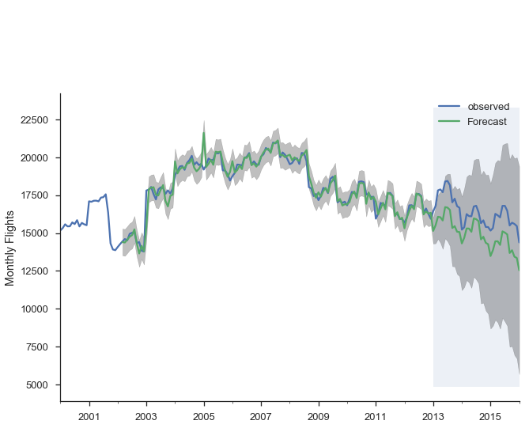
Resources
This is a collection of links for those interested.
Time series modeling in Python
General Textbooks
- Forecasting: Principles and Practice: A great introduction
- Stock and Watson: Readable undergraduate resource, has a few chapters on time series
- Greene's Econometric Analysis: My favorite PhD level textbook
- Hamilton's Time Series Analysis: A classic
- Lutkehpohl's New Introduction to Multiple Time Series Analysis: Extremely dry, but useful if you're implementing this stuff
Conclusion
Congratulations if you made it this far, this piece just kept growing (and I still had to cut stuff).
The main thing cut was talking about how SARIMAX is implemented on top of using statsmodels' statespace framework.
The statespace framework, developed mostly by Chad Fulton over the past couple years, is really nice.
You can pretty easily extend it with custom models, but still get all the benefits of the framework's estimation and results facilities.
I'd recommend reading the notebooks.
We also didn't get to talk at all about Skipper Seabold's work on VARs, but maybe some other time.
As always, feedback is welcome.